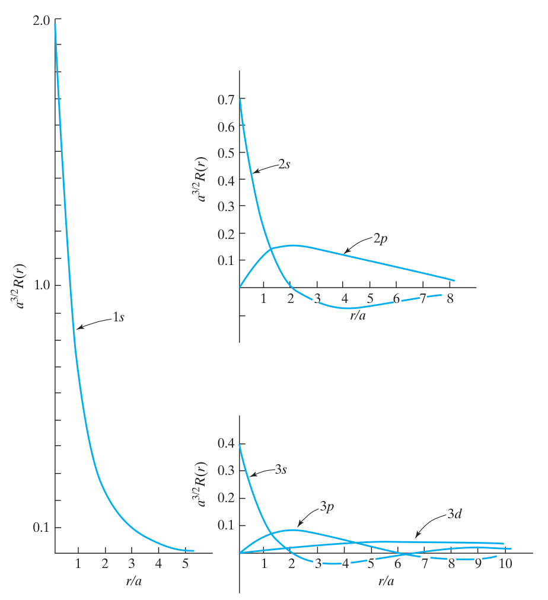
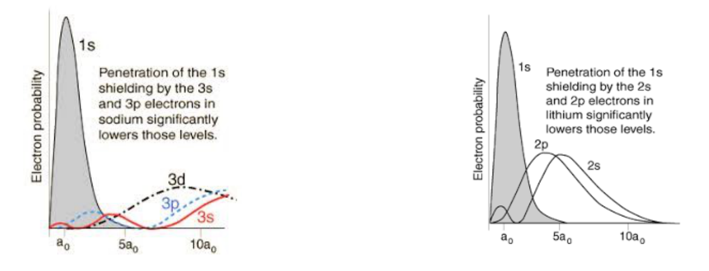
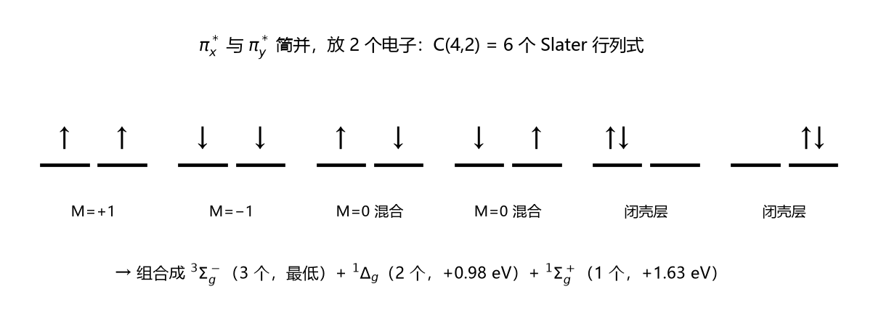
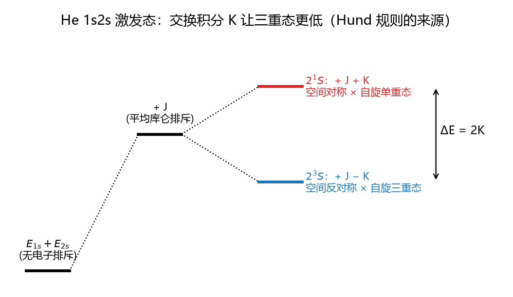
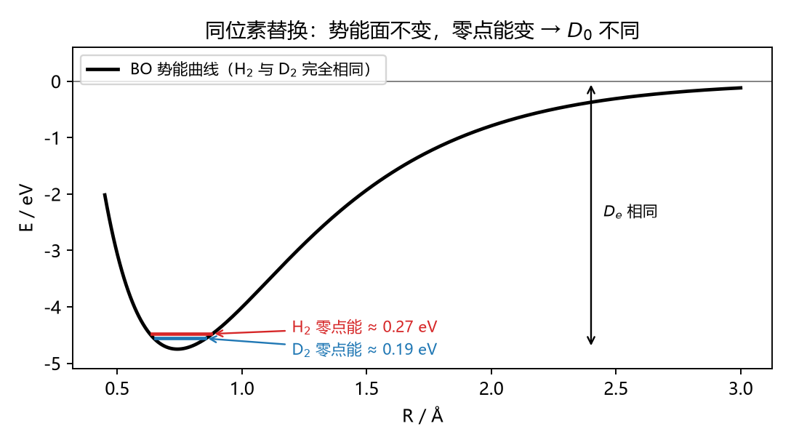
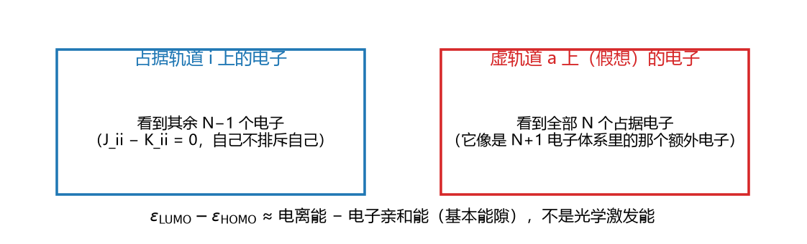
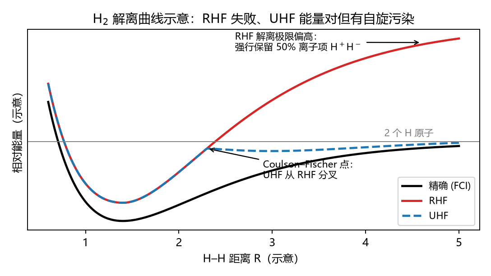

CM5235 Applied Computational Chemistry · 期中题库
第一批：L1 计算平台与方法标度 · L2 量子力学基础与 Hartree–Fock
这份题库考什么 ：考试开卷，能从讲义里翻到的东西不值得练。这里每道题都给一个具体情景，比如一组数据、一个计算结果或一个现象，要你用公式推出结论，或者判断某个说法对不对。
怎么用 ：先自己做，再看解析。解析分三块：
思路 ：这道题按什么顺序想，每一步用了什么；公式在说什么 ：公式里每一项的意思，以及它在什么条件下成立；关联 ：这个想法在后面哪一讲、哪次作业里还会用到。
题型：判断 公式辨析，给几个关于同一个公式的说法，判断对错并说出理由；情景 给数据或现象，要你分析；单选 多选 选项是几种不同的推理，只有推理对了才能选对；计算 简单的数值计算，包括电子数、轨道数；简答 写出推理过程。
L1 · 计算平台与方法标度
L1 真正值得理解的只有一件事：计算量随体系增大怎么增长，以及这对“选什么方法、怎么并行”意味着什么。
情景 多选 1.1 你在集群上有一周机时（168 小时）。测试结果如下：HF 用 200 个基函数算一个分子需要 1 h；MP2 用 100 个基函数需要 2 h；CCSD(T) 用 100 个基函数需要 10 h。按形式标度（HF \(N^4\)、MP2 \(N^5\)、CCSD(T) \(N^7\)）估计，下面哪些计算能在一周内完成？
CCSD(T)，200 个基函数，1 个分子
MP2，200 个基函数，1 个分子
HF，800 个基函数，1 个分子
HF，400 个基函数，10 个构象
答案：B、D
思路
标度的意思是 \(t \propto N^p\)，所以不用知道绝对时间，只要用比值：\(t_{\text{新}} = t_{\text{测试}}\times(N_{\text{新}}/N_{\text{测试}})^p\)。
A：\(10\times2^7 = 1280\) h ≈ 53 天，超出。
B：\(2\times2^5 = 64\) h，可以。
C：\(1\times4^4 = 256\) h，超出。基函数只多了 4 倍，时间却多了 256 倍。
D：每个构象 \(1\times2^4 = 16\) h，10 个共 160 h，刚好够。
这道题想让你体会的 ：同样多一倍基函数，HF 多花 16 倍时间，CCSD(T) 多花 128 倍。标度指数 \(p\) 比“单次算多快”重要得多。
（补充：实际大分子的 HF 常常比 \(N^4\) 便宜，因为相距很远的基函数之间的积分近似为零，可以直接跳过。形式标度给的是最坏情况。）
公式在说什么 \(t \propto N^p\)
关联 L4 的标度表（HF \(N^4\) → MP2 \(N^5\) → CCSD \(N^6\) → CCSD(T) \(N^7\) → FCI 阶乘增长）就是这道题的数据来源。L3 的 RI 近似能把 HF 降到约 \(N^3\)，也是在改 \(p\)。
情景 简答 1.2 目前 CCSD(T) 的高效实现大约能算到 20 个原子。导师说：“按 Moore 定律，计算能力每两年翻一倍，再过十年就能用 CCSD(T) 算我们现在用 DFT 算的 50 原子体系了。”这个判断对吗？请算一算。
答案：不对，十年后大约只能算到 33 个原子
思路
十年是 5 个“两年”，算力增长 \(2^5 = 32\) 倍。
计算时间不变的前提下：\(N_{\text{新}}^7 = 32\,N_{\text{旧}}^7\)，所以 \(N_{\text{新}}/N_{\text{旧}} = 32^{1/7} = e^{\ln32/7} = e^{0.495} \approx 1.64\)。
\(20\times1.64 \approx 33\) 个原子，远不到 50。
对比 HF：\(32^{1/4} = 2.38\)。标度越陡，硬件进步带来的好处越小。
结论 ：光靠等硬件解决不了高精度方法的规模问题。要处理大体系，只能换思路：
① 用更便宜的理论，比如 DFT（L5）；
② 利用“电子相关随距离迅速衰减”这一点，只计算局域的相关（L6，局域轨道方法）；
③ 机器学习（L1）。
公式在说什么 \(N_{\text{新}}/N_{\text{旧}} = (\text{算力倍数})^{1/p}\)
情景 单选 1.3 集群有 100 个节点。任务 I：200 个构象各算一次单点能，彼此无关。任务 II：对角化一个非常大的 CI 矩阵，每一步迭代都要用到上一步的全部结果。把两个任务都铺到 100 个节点上，最可能的结果是：
两者都接近 100 倍加速
任务 I 接近 100 倍加速；任务 II 远达不到，甚至可能比少数几个节点更慢
任务 II 加速更多，因为矩阵越大越适合并行
两者都没有加速，因为量子化学程序不能并行
答案：B
思路
任务 I 的 200 个计算互不依赖，每个节点各算各的，中间不用通信，加速接近线性。
任务 II 的每一步都要汇总所有节点的数据才能进行下一步。节点之间通信的延迟约 1 μs，相当于约 2000 个 CPU 时钟周期，带宽也远低于本机内存。
节点越多，每个节点分到的计算越少，但通信次数不变甚至更多，时间最终都花在等数据上。
C 的错误在于：矩阵大只说明
计算量 大，能否并行取决于各步之间是否
相互依赖 。矩阵乘法容易并行；对角化、LU 分解这类前后依赖的矩阵分解就很难并行。
关联 SCF 每一轮都要对角化 Fock 矩阵（L2–L3），CI 要对角化 CI 矩阵（L4）。这就是这些方法扩展到很多节点时效率下降的原因。
判断 1.4 关于标度公式 \(t \propto N^p\)，判断下列说法是否正确：
对只有 3–4 个原子的小分子，\(N^4\) 的方法一定比 \(N^5\) 的方法快。
\(N\) 取原子数还是基函数数，指数 \(p\) 都一样（基组类型固定时）。
用一台快 10 倍的电脑，所有方法能处理的体系都变大 10 倍。
比较两个方法谁更适合大体系，看 \(p\) 比看小分子测试的实际耗时更可靠。
答案
说法 判断 理由 (1) ✗ \(t \propto N^p\) 描述的是 N 很大时的增长趋势 。完整的写法是 \(t = cN^p + (\text{低次项})\)，前面的系数 \(c\) 和低次项在小体系里可能占主导。小分子上高标度方法完全可能更快。 (2) ✓ 每个原子带的基函数数目大致固定，基函数数 ≈ 常数 × 原子数，代入 \(N^p\) 只会改变系数，不会改变指数。 (3) ✗ 体系只能变大 \(10^{1/p}\) 倍：HF 为 1.78 倍，CCSD(T) 为 1.39 倍。 (4) ✓ 体系增大后，指数的差别会压过系数的差别，所以决定大体系上谁更快的是 \(p\)。
L2 · 量子力学基础与 Hartree–Fock
A 什么时候必须用量子力学
情景 计算 2.1 298 K 时 \(k_BT = 207\ \text{cm}^{-1} = 0.593\ \text{kcal/mol}\)。
答案
(a) \(n_2/n_1 = e^{-1.0/0.593} = e^{-1.686} = 0.185\)，所以 \(n_1 = 1/1.185 = 84\%\)，\(n_2 = 16\%\)。
(b) 298 K：\(n_T/n_S = \dfrac{3}{1}e^{-200/207} = 3\times0.381 = 1.14\)，三重态占 \(1.14/2.14 = 53\%\)，
比基态还多 。
10 K：\(k_BT = 0.695\times10 = 6.95\) cm⁻¹，\(n_T/n_S = 3e^{-28.8} \approx 10^{-12}\)，几乎全是单重态。
(c) 室温下一半以上的分子处在三重态，实验测到的磁性来自这个激发态。只算单重态基态，会得出“没有磁性”的错误结论。正确做法是同时算出单重态和三重态的能量差（即磁耦合常数），再用 Boltzmann 分布加权。
思路
先把能量差和 \(k_BT\) 换成同一单位，算出比值 \(\Delta E/k_BT\)。这个比值决定指数项。
再乘上简并度之比。(b) 里三重态有 3 个状态（\(M_S = -1, 0, +1\)），相当于“多了三张彩票”，即使能量略高，总数也可能更多。
能量差和 \(k_BT\) 相当（200 vs 207）时，温度对布居的影响最大。这也是低温和室温下测到的磁化率差别很大的原因。
公式在说什么 \(\dfrac{n_i}{n_j} = \dfrac{g_i}{g_j}\,e^{-(e_i-e_j)/k_BT}\)
关联 L5 用 BS-DFT 计算磁耦合常数 J，就是在算 (b) 里的单重态–三重态能量差，HW2 Ex5 的 Cu₂ 就是这样一个体系。(a) 的构象布居在计算 NMR、旋光等性质时要用来做加权平均。
情景 计算 2.2 把一个电子限制在长度为 L 的一维区域里。
答案 分立，必须用量子力学 。思路 ：“量子化”不是粒子本身的性质，而是限制 造成的。波必须在有限空间里形成驻波，所以只有某些波长被允许，从而只有某些能量被允许。空间越小、粒子越轻，能级间隔越大。
公式在说什么 \(E_n = \dfrac{n^2h^2}{8mL^2}\)
关联 L6 的 UV/Vis 和 TD-DFT 计算的就是 (c) 中的这类激发能。HW1 Ex6 用 TD-DFT 算了 CH₂FOH 的吸收谱。这个分子没有共轭体系，第一激发态高达 8.1 eV（153 nm），吸收落在真空紫外，和 (c) 的结论一致。
B 测量、叠加、对易：公设到底在说什么
情景 多选 2.3 氢原子中的电子处于 \(\Psi = \frac{1}{\sqrt2}(\varphi_{1s} + \varphi_{2p_z})\)。已知 \(E_{1s} = -0.5\) Ha，\(E_{2p} = -0.125\) Ha；1s 的 \(l = 0, m = 0\)，\(2p_z\) 的 \(l = 1, m = 0\)。下列说法正确的是：
测一次能量，一定得到 −0.3125 Ha
测一次能量，得到 −0.5 Ha 或 −0.125 Ha，概率各 50%
测 \(L_z\)，一定得到 0
测 \(L^2\)，一定得到 0
如果先测能量得到 −0.125 Ha，紧接着测 \(L^2\)，一定得到 \(2\hbar^2\)
答案：B、C、E
思路 ：对每个可观测量都问同一个问题：\(\Psi\) 是不是这个算符的本征函数？
能量 ：\(\Psi\) 由两个不同 能量的本征态组成，所以不是 \(\hat H\) 的本征态。单次测量只能得到某个本征值：−0.5 或 −0.125，概率各为 \(|1/\sqrt2|^2 = 1/2\)。−0.3125 Ha 是期望值 \(\frac12(-0.5) + \frac12(-0.125)\)，它是大量测量的平均值，单次测量永远得不到。所以 A 错、B 对。\(L_z\) ：两个组分的 \(m\) 都是 0，\(\hat L_z\Psi = 0\cdot\Psi\)，所以 \(\Psi\) 是 \(\hat L_z\) 的本征态，结果确定为 0。C 对。\(L^2\) ：两个组分的 \(l\) 不同（0 和 1），不是本征态，可能得到 0 或 \(1\cdot2\,\hbar^2 = 2\hbar^2\)。D 错。先后测量 ：测到 −0.125 Ha 后，波函数坍缩到 \(\varphi_{2p_z}\)，它的 \(l = 1\)，再测 \(L^2\) 一定得到 \(l(l+1)\hbar^2 = 2\hbar^2\)。E 对。
这道题说明：同一个波函数，对某些量有确定值，对另一些量没有。要不要有确定值，只看它是不是那个算符的本征态。
公式在说什么
情景 简答 2.4 原子轨道用 s、p、d 标记；HCl 的分子轨道用 σ、π 标记；H₂O 的分子轨道用 a₁、b₁、b₂ 标记；八面体配合物中，金属的 d 轨道分裂成 t₂g 和 e_g。用“哪个算符和 \(\hat H\) 对易”解释这些标记方式为什么不同。
答案
思路 ：一个量能用来给状态“贴标签”（即好量子数），前提是它的算符和 \(\hat H\) 对易，这样它和能量可以同时有确定值。而一个算符和 \(\hat H\) 对易，是因为势能 \(V\) 在对应的对称操作下保持不变。所以关键是看：
势能有什么对称性 。
体系 势能的对称性 与 \(\hat H\) 对易的算符 标记 原子 球对称：任意转动都不变 \(\hat L^2\)、\(\hat L_z\) \(l\) → s、p、d；\(m\) HCl（直线形） 只有绕键轴转动不变 只有 \(\hat L_z\)（z 为键轴），\(\hat L^2\) 不再对易 \(|m| = 0, 1, 2\) → σ、π、δ H₂O（C₂ᵥ） 只剩几个离散的对称操作（C₂ 转动、两个镜面） 点群的对称操作 不可约表示 a₁、a₂、b₁、b₂ 八面体配合物 从球对称降为 Oₕ Oₕ 的对称操作 5 个 d 轨道分成 t₂g（3 个）和 e_g（2 个）
规律 ：对称性越低，与 \(\hat H\) 对易的算符越少，量子数越少，简并度也越低（d 轨道五重简并被晶体场拆开）。反过来，只要有对称性，就能把 Fock 矩阵分块对角化，计算量随之减少（L3 “Effects of Symmetry”）。
公式在说什么 \([\hat A,\hat H] = 0\) ⟺ \(\hat A\) 和 \(\hat H\) 有共同的本征函数 ⟺ \(A\) 是守恒量，可以用来标记能级。
C 期望值与变分原理：用它来检查计算结果
情景 多选 2.5 已知 He 原子的 HF 极限能量（无限大基组下的 HF）为 −2.8617 Ha，精确的非相对论能量为 −2.9037 Ha。几位同学报告了下面的结果。哪些一定 有错误？
RHF/cc-pVDZ：−2.8552 Ha
RHF/超大基组：−2.8750 Ha
FCI/cc-pVQZ：−2.9024 Ha
CISD/cc-pV5Z：−2.9100 Ha
MP2/cc-pVTZ：−2.8900 Ha
答案：B、D
思路 ：变分原理说，任何试探波函数的能量期望值都不低于精确基态能量。据此可以给出两条“地板”：
精确能量是所有变分方法的地板。 HF、CI 都是变分方法。D 中 He 只有 2 个电子，CISD 已经包含了所有可能的激发，就是 FCI；它的能量低于精确值 −2.9037，不可能。HF 极限是 HF 方法自己的地板。 单个行列式无论基组多大，能量最低只能到 HF 极限。B 低于 −2.8617，不可能。A 比 HF 极限高，合理：小基组灵活性不够。
C 比精确值略高，合理：FCI 在有限基组下仍受基组限制。
E：MP2 是微扰方法，不是变分的 ，原则上可以低于精确值。这里的 −2.8900 在 HF 极限和精确值之间，没有理由判错。
顺便算一下 ：He 的关联能 \(E_{corr} = -2.9037 - (-2.8617) = -0.042\) Ha ≈ −1.14 eV ≈ −26 kcal/mol。这只是
一对 电子的关联能，已经和一个化学键的键能处于同一量级，所以 HF 不能用来精确计算反应能。
公式在说什么 \(E[\Phi] = \dfrac{\langle\Phi|\hat H|\Phi\rangle}{\langle\Phi|\Phi\rangle} \ge E_0\)
关联 L3 变分原理 → L4 为什么截断 CI 是变分的但不满足大小一致性，而 CC 满足大小一致性却不是变分的 → L5 HK 第二定理是对电子密度的变分原理。基组越大能量越低，也是 L4 做基组外推的依据。
计算 2.6 假设某个氢原子试探波函数只包含 1s 和 2s 两个精确本征态的成分（\(E_{1s} = -0.5\) Ha，\(E_{2s} = -0.125\) Ha），算出的能量期望值是 −0.40 Ha。(a) 1s 成分的权重是多少？(b) 变分优化让能量下降，本质上是在做什么？
答案 思路 ：期望值公式可以反过来用，由能量推出组成。这也说明：能量误差是波函数误差的二次 小量（如果 1s 的系数是 \(1 - \delta\)，能量误差正比于 \(\delta^2\)），所以 HF 的能量常常比它的波函数（例如偶极矩）准。
D 原子：为什么 s 轨道特殊
情景 单选 2.7 两个看似无关的现象：① EPR 的各向同性超精细耦合（Fermi 接触项）只来自 s 轨道上的未成对自旋密度；② 相对论效应（L6）让重元素的 6s 轨道明显收缩，比如金的 6s。它们背后的共同原因是：
s 轨道能量最低
只有 s 轨道在原子核处的振幅不为零。\(l > 0\) 的轨道受离心项 \(l(l+1)/r^2\) 排斥，在核处为零。电子在核附近能“接触”到核自旋，也会被核加速到接近光速
s 轨道的角动量最大
s 轨道没有节点
答案：B
思路
径向方程里有一项 \(\dfrac{\hbar^2}{2m}\dfrac{l(l+1)}{r^2}\)。它在 \(r \to 0\) 时发散，相当于一堵“离心墙”，把 \(l > 0\) 的电子挡在核外，所以 \(R_{nl}(r) \propto r^l\)。
只有 \(l = 0\) 时这堵墙不存在，s 电子在核处有有限的概率密度 \(|\psi(0)|^2\)。
① Fermi 接触项正比于 \(|\psi(0)|^2\)，也就是核所在位置的自旋密度，p、d 电子在核处为零，贡献也为零。
② 电子越靠近核，受到的吸引越强，速度越快。重核（Z 大）附近的 s 电子速度可以达到光速的相当比例，相对论质量增加，轨道收缩。
D 错：2s、3s 都有径向节点。“没有角向节点”才是 s 轨道的特征，但这和核处振幅不是一回事。

讲义 L2 p55：只有 s 型径向函数在 r = 0 处不为零 关联 L3 讲基组时提到 “tight functions … only used for computing HFCs”：要算准超精细耦合（HFC），基组里必须有指数很大、紧贴核的 s 函数，因为 Gaussian 函数在核处是平的，描述不好核附近的 \(|\psi(0)|^2\)。
情景 简答 2.8 在氢原子中，3d 的能量低于 4s（\(E_n = -1/2n^2\)，只和 n 有关）。但 K 原子的基态是 [Ar]4s¹，4s 比 3d 低约 2.7 eV。解释这个“反转”。
答案
思路
氢原子只有一个电子，势能是纯 \(-1/r\)，能量只取决于 n：3d（n = 3）自然低于 4s（n = 4）。
K 的最外层电子处在 18 个内层电子（[Ar] 实）形成的平均场里。如果它一直待在内层外面，感受到的有效核电荷约为 19 − 18 = 1，就和氢原子差不多。
3d 电子（\(l = 2\)）有很强的离心势垒，几乎不钻进内层，感受到的 \(Z_{eff} \approx 1\)，能量接近氢原子 n = 3 的值（约 −1.5 eV）。
4s 电子（\(l = 0\)）没有离心势垒，它的内层小峰会钻进 [Ar] 实内部，在那里感受到接近 19 的核电荷，平均下来 \(Z_{eff}\) 明显大于 1，能量被大幅拉低（K 的第一电离能是 4.34 eV）。
结果：钻穿（penetration）带来的好处超过了主量子数更大带来的坏处，4s 反而更低。
核心 ：多电子原子中，平均场不再是纯 \(1/r\) 势，n 相同时 \(l\) 越小，钻得越深，能量越低（\(E_{ns} < E_{np} < E_{nd}\)）；而且这个差别可以大到让不同 n 的能级交错。

讲义 L2 p75：Na 的 3s、3p 钻穿 1s 屏蔽层 关联 第一过渡系中 4s 和 3d 能量非常接近，同一个金属有好几种能量相近的电子构型（近简并）。这正是 L4 “静态相关”的典型来源，也是过渡金属体系难算、DFT 结果对泛函敏感的原因之一。
E 交换与电子相关：单个行列式能做什么、不能做什么
情景 计算 2.9 O₂ 的价层构型是 …\((\pi^*)^2\)：两个简并的 \(\pi^*_x\)、\(\pi^*_y\) 轨道中只有 2 个电子。

4 个自旋轨道里放 2 个电子，共 6 种放法 答案
(a) 2 个空间轨道 × 2 种自旋 = 4 个自旋轨道，从中选 2 个：\(C(4,2) = 6\) 个行列式。它们组合成 3 个三重态（\(^3\Sigma_g^-\)，\(M_S = +1, 0, -1\)），加上 3 个单重态（\(^1\Delta_g\) 两个，\(^1\Sigma_g^+\) 一个）。3 + 2 + 1 = 6，状态总数守恒。
(b) 比较几种放法的电子排斥：
两个电子在同一个 轨道：排斥为 \(J_{xx}\)，两个电子的电荷云完全重叠，排斥最大。
两个电子在不同 轨道、自旋相反 ：排斥为 \(J_{xy}\)，比 \(J_{xx}\) 小。
两个电子在不同轨道、自旋相同 ：\(J_{xy} - K_{xy}\)。交换项只在同自旋电子之间出现，进一步降低能量。
物理图像和 He 1s2s 一样：自旋平行时，空间波函数反对称，两个电子不能出现在同一位置（交换空穴），平均距离更远。这就是 Hund 规则。

同样的机制在 He 1s2s 中：三重态比单重态低 2K
(c) ① 基态 α 电子比 β 电子多 2 个，闭壳层 RHF 根本写不出来，必须用开壳层方法（UHF、ROHF，或 DFT 的 UKS）。
② 如果想算单重态 \(^1\Delta_g\)，单个行列式也不够。它是 \(\frac{1}{\sqrt2}(|\pi_x^2| - |\pi_y^2|)\) 这样两个行列式的组合，需要多组态方法（L4）。
公式在说什么 两个电子在轨道 a、b 中的能量（相对于单电子能量之和）
关联 \(C(m, n)\) 就是 FCI 的维度：10 个电子放进 40 个自旋轨道，约有 \(8.5\times10^8\) 个行列式。L5 的磁耦合同样是在比较“自旋平行”和“自旋反平行”的能量差，只不过两个电子分别在两个金属中心上（HW2 Ex5 的 Cu₂）。
情景 单选 2.10 用大基组 HF 计算 F₂ 的结合能 \(D_e = 2E(\text{F}) - E(\text{F}_2)\)（F 原子用开壳层 HF 单独计算），结果是负的 ，也就是说 HF 认为 F₂ 不稳定。实验值约为 +1.66 eV。最主要的原因是：
基组太小
HF 缺少电子相关能。F₂ 的成键区域和孤对电子挤在一起，电子对之间距离很近，相关能（负值）比两个分开的 F 原子大得多。HF 漏掉的相关能在分子里比在原子里多，所以系统性地低估了结合能
HF 违反了变分原理，能量偏低
BO 近似在 F₂ 中失效
答案：B
思路
把真实结合能拆开：\(D_e^{exact} = D_e^{HF} + \left[2E_{corr}(\text{F}) - E_{corr}(\text{F}_2)\right]\)。
成键时电子被挤进更小的区域，形成更多“靠得很近的电子对”，所以 \(|E_{corr}(\text{F}_2)| > |2E_{corr}(\text{F})|\)，方括号里是正的，也就是相关能帮助成键。
HF 把这一项整体丢掉了，结合能就系统性偏低；F₂ 键本来就弱，一偏低就变成了负值。
量级感：2.5 题算过，He 一对电子的关联能就有约 1.1 eV，和 F₂ 的键能相当。
A：题目说的是大基组，而且基组不够通常不会让结合能变号。C：HF 严格满足变分原理。D：F₂ 在平衡几何附近是正常的闭壳层基态，BO 近似没问题。
关联 HF 缺的主要是反自旋电子之间的 Coulomb 相关（单个行列式里，反自旋电子的运动互不相关，同自旋的至少还有交换空穴）。L4 的 MP2、CCSD(T) 把它补回来之后，F₂ 的结合能就能算准。HW1 Ex3 用 HF、B3LYP、CCSD 三种方法优化同一个 CH₂FCl 分子，结果的差别也主要来自有没有算入相关能。
F BO 近似、HF 方程、Roothaan 方程
情景 多选 2.11 把 H₂ 换成 D₂（氘的质量约为氢的 2 倍，核电荷相同）。在 BO 近似下，下列哪些说法正确？
两者的平衡键长相同
两者的势能曲线深度 \(D_e\) 相同
D₂ 的振动频率约为 H₂ 的 \(1/\sqrt2\)
两者从振动基态解离所需的能量 \(D_0\) 相同
两者的势能曲线不同，因为核质量不同

答案：A、B、C
思路
BO 近似下，先固定核的位置 去解电子问题。电子 Hamiltonian 里只出现核的位置和核电荷 ，不出现核质量。H₂ 和 D₂ 的电荷、电子数都一样，所以势能曲线完全相同 ：平衡键长相同，曲线深度 \(D_e\) 相同。A、B 对，E 错。
核质量在第二步才登场：核在这条势能曲线上振动。谐振频率 \(\omega = \sqrt{k/\mu}\)，力常数 \(k\)（曲线在极小点的曲率）相同，约化质量 \(\mu\) 从 0.5 变成 1.0，所以 \(\omega\) 变为原来的 \(1/\sqrt2\)：4401 → 约 3112 cm⁻¹。C 对。
零点能 \(\approx\hbar\omega/2\)：H₂ 约 0.27 eV，D₂ 约 0.19 eV。\(D_0 = D_e - \text{ZPE}\)，所以 D₂ 的 \(D_0\) 大约多 0.08 eV，更难解离。D 错。
这就是动力学同位素效应的来源：C–D 键比 C–H 键更难断，是零点能不同造成的，而不是势能面不同。
公式在说什么 BO 近似把问题分成两步：
情景 单选 2.12 下列哪种情况下，BO 近似最可能失效？
优化 H₂O 基态的几何结构
分子被光激发后，两个激发态的势能面在某个几何构型附近相交，分子从一个态“跳”到另一个态（光化学中的锥形交叉）
计算室温下 H₂O 的振动频率
计算含重原子（如 I）的分子的基态几何
答案：B 思路 ：BO 近似要求“核动一动，电子能及时跟上，并且始终留在同一个电子态上”。这要求电子态之间的能量差远大于核运动带来的扰动。两个势能面相交的地方，能量差趋于零，核运动的一点点动能就能让电子在两个态之间跳转，“核走核的、电子走电子的”这种分离就不成立了。相对论效应 （L6），不是 BO 近似失效。核越重，BO 近似反而越好。
关联 L1 提到的“同时求解电子和核的 Schrödinger 方程（non-BO）”就是为了处理这种情况。几何优化和频率计算（HW1）都建立在单一的 BO 势能面上。
情景 计算 2.13 He 原子的 HF 计算结果：\(E_{HF} = -2.8617\) Ha，1s 轨道能 \(\varepsilon_{1s} = -0.9179\) Ha。已知精确能量 \(E_{exact}(\text{He}) = -2.9037\) Ha，\(E(\text{He}^+) = -2.0000\) Ha（单电子体系，可精确求解），实验电离能为 24.59 eV。
答案
(a) He 只有一个占据轨道，公式化简为：
\(E_{HF} = 2H_{11} + (2J_{11} - K_{11}) = 2H_{11} + J_{11}\)（因为 \(K_{11} = J_{11}\)）
\(\varepsilon_{1s} = H_{11} + (2J_{11} - K_{11}) = H_{11} + J_{11}\)
两式相减：\(H_{11} = E_{HF} - \varepsilon_{1s} = -2.8617 + 0.9179 = -1.9438\) Ha，于是 \(J_{11} = \varepsilon_{1s} - H_{11} = 1.0259\) Ha。
(b) \(IE \approx -\varepsilon_{1s} = 0.9179\) Ha = 24.98 eV，比实验值 24.59 eV 高 0.39 eV，误差约 1.6%。
(c) \(2\varepsilon_{1s} = 2H_{11} + 2J_{11} = -1.8358\) Ha，比 \(E_{HF}\) 高了一个 \(J_{11}\)。每个电子的轨道能里都算了一次“我和另一个电子的排斥”，两个加起来就把这对排斥算了两遍。正确的关系是 \(E_{HF} = \sum_i(H_{ii} + \varepsilon_i) + V_{NN}\)。
(d) 把误差拆开：
效应 对 IE 的影响 大小 ① 轨道弛豫：Koopmans 假设拿走一个电子后，剩下的轨道不变，He⁺ 的能量取 \(H_{11} = -1.9438\)。实际上 He⁺ 的电子会收缩，能量降到 −2.0000 高估 IE +0.056 Ha ② 电子相关：HF 漏掉了中性 He 的关联能（He⁺ 只有一个电子，没有关联能） 低估 IE −0.042 Ha
验算：精确 IE = −2.0000 − (−2.9037) = 0.9037 Ha；Koopmans = 0.9037 + 0.056 − 0.042 ≈ 0.918 Ha ✓。
两个误差方向相反、大小相近，部分抵消 ，所以 Koopmans 定理对第一电离能常常出奇地准。
公式在说什么
关联 \(K_{ii} = J_{ii}\) 让 HF 没有“自己排斥自己”的问题。DFT 的近似交换泛函做不到这一点，就产生了自相互作用误差（L5）。HW1 Ex1 中 HCl 的 HOMO 能量，同样可以用 Koopmans 定理估计电离能。
情景 单选 2.14 一位同学用 HF 算出苯的 HOMO–LUMO 能隙，想用它预测紫外吸收，结果比实验吸收能（约 5–7 eV）大很多。最根本的原因是：
HF 能隙就是激发能，误差只是因为基组太小
占据轨道上的电子感受到其余 N−1 个电子；虚轨道是在全部 N 个占据电子的场中算出来的，更像是“再加一个电子”时那个额外电子的轨道。所以能隙 ≈ 电离能 − 电子亲和能。真正激发时，电子和留下的空穴之间还有吸引，这部分能隙没有算进去
HF 能隙总是小于激发能
苯的 BO 近似失效

答案：B
思路 ：直接看轨道能公式里求和的范围。
占据轨道 \(i\)：\(\varepsilon_i = H_{ii} + \sum_{j}^{occ}(2J_{ij} - K_{ij})\)。求和包括 \(j = i\)，而 \(2J_{ii} - K_{ii} = J_{ii}\) 只是和同一轨道上的另一个电子的排斥，所以电子 \(i\) 感受到的是其余 N−1 个电子。
虚轨道 \(a\)：\(\varepsilon_a = H_{aa} + \sum_{j}^{occ}(2J_{aj} - K_{aj})\)。\(a\) 本身不在占据轨道里，放在 \(a\) 上的电子要感受全部 N 个电子的排斥，所以 \(\varepsilon_a\) 被推得很高，对应的是“N+1 电子体系”（Koopmans 意义下 \(-\varepsilon_a \approx\) 电子亲和能）。
所以 \(\varepsilon_a - \varepsilon_i \approx IE - EA\)：这是把一个电子从分子里拿走、再放到另一个分子上的能量（基本能隙）。
光激发时，电子还留在同一个分子里，它和留下的空穴互相吸引（\(-J_{ia}\)）。对单重态还有一项交换（\(+2K_{ia}\)），所以 \(\Delta E_{\text{单重}} \approx \varepsilon_a - \varepsilon_i - J_{ia} + 2K_{ia}\)，小于能隙。
关联 CIS 和 TD-DFT（L5–L6）正是把 \(-J_{ia} + 2K_{ia}\) 这类电子–空穴相互作用算了进去，所以能给出合理的激发能。HW1 Ex6 同时用了 CIS 和 TDA-B3LYP，就是这类方法。另外，DFT 的 HOMO–LUMO 能隙往往反过来偏小 ，原因也是它的交换处理和 HF 不同（L5 自相互作用误差）。
计算 2.15 （电子数与轨道数）STO-3G 最小基组：H 只有 1s（1 个基函数）；C、N、O 各有 1s、2s、2p（1 + 1 + 3 = 5 个）。
答案
三条规则 ：① 基函数数 K = 分子轨道数（K 个线性无关的函数组合出 K 个轨道，不多不少）；② 电子数 = Σ 原子序数 − 电荷；③ 闭壳层占据 N/2 个轨道，其余 K − N/2 个是虚轨道。
NH₃ CH₄ NH₃⁺•（UHF） CH₄ + H 上的 p 基函数 K = MO 数 5 + 3 = 8 5 + 4 = 9 8（每种自旋各 8 个 MO） 9 + 12 = 21 电子数 N 7 + 3 = 10 6 + 4 = 10 9：α = 5，β = 4 10 占据轨道 5 5 α 5，β 4 5 虚轨道 3 4 α 3，β 4 16
(c) 只有基函数数和虚轨道数变了，电子数和占据轨道数不变（电子数由分子决定，与基组无关）。HF 能量降低或不变（变分原理：函数空间变大了，最优解只会更好）。H 上的 p 函数让 H 的电子云可以朝键的方向极化，所以叫“极化函数”（L3）。
思路 ：UHF 中 α、β 各自解一套 Roothaan 方程，所以 α、β 各有 K 个轨道，只是占据数不同。\(N_\alpha - N_\beta = 1 = 2S\)，这是一个双重态，理想的 \(\langle S^2\rangle = S(S+1) = 0.75\)。
公式在说什么 Roothaan 方程 \(\mathbf{FC} = \mathbf{SC}\boldsymbol\varepsilon\)
情景 多选 2.16 你用 UHF 算了三个体系，程序输出的 \(\langle S^2\rangle\) 如下：(i) H₂ 键长拉到 3 Å 的单重态：1.00；(ii) CH₃• 自由基（双重态）：0.762；(iii) 某个双核金属配合物的双重态：1.25。下列判断正确的是：

示意图（不是真实数据）
(i) 中 UHF 的能量比 RHF 更接近精确值
(i) 中 \(\langle S^2\rangle = 1.00\) 说明它是纯三重态
(ii) 的自旋污染很小（理想值 0.75），结果可以接受
(iii) 的自旋污染严重，说明单个行列式很可能不适合这个体系，应考虑多组态方法
(i) 中 UHF 给出一个 H 上是 α 自旋、另一个 H 上是 β 自旋，而真实的单重态在任何位置的自旋密度都是 0
答案：A、C、D、E
思路
\(\langle S^2\rangle\) 也是一个期望值。如果 UHF 波函数是几个自旋态的混合，\(\langle S^2\rangle = \sum_S w_S\,S(S+1)\)。
(i)：单重态 S(S+1) = 0，三重态 = 2。\(\langle S^2\rangle = 1.00\) 正好是两者各占 50% ，而不是纯三重态（纯三重态应为 2）。B 错。
为什么是一半一半：RHF 强迫两个电子共用一个轨道，拉长后仍保留 50% 的 H⁺H⁻ 离子成分，能量偏高；UHF 让 α 电子局域在一个 H 上、β 电子在另一个 H 上，去掉了离子成分，能量接近正确（A 对），但这样一个行列式恰好是单重态和三重态的等量混合，自旋密度也变成了一边正、一边负（E 对）。
(ii)：0.762 与 0.75 只差 0.012，污染可以忽略。C 对。
(iii)：双重态理想值 0.75，1.25 偏差很大，说明混入了大量四重态等高自旋态。这通常意味着体系有多个未成对电子、存在近简并，单个行列式描述不了。D 对。
小结 ：UHF 在键断裂时能量对了，自旋却不对。它是在“能量”和“自旋纯度”之间做了取舍。
公式在说什么 \(\langle\hat S^2\rangle = S(S+1)\)（纯自旋态）；UHF 中 \(\langle\hat S^2\rangle \ge S(S+1)\)
关联 这道题连起了四讲：L2 的 RHF/UHF → L3 的自旋污染 → L4 的静态相关（真正的解法是 \(c_1|\sigma_g^2| - c_2|\sigma_u^2|\) 两个行列式，拉长后两者权重趋于相等）→ L5 的 BS-DFT（在磁耦合计算中故意 使用这种“一边 α、一边 β”的破缺对称性解，再通过 Noodleman 等人的公式把它和高自旋态的能量差换算成耦合常数 J，就是 HW2 Ex5）。HW1 Ex2 扫描 HF 分子的势能面时，拉长后必须让 UHF 真正打破对称性，否则解离曲线仍然是 RHF 那条错误的曲线。
G 公式辨析：变量、适用条件、边界情况
每题围绕一个公式，判断说法的对错，并说出理由。关键不是记住公式长什么样，而是弄清每个变量指什么、公式在什么前提下成立、推到极端情况会怎样。
判断 2.17 Boltzmann 分布 \(\dfrac{n_i}{n_j} = \dfrac{g_i}{g_j}e^{-(e_i-e_j)/k_BT}\)
温度趋于无穷大时，\(n_i/n_j \to 1\)。
能量零点可以任意选取，不影响结果。
\(g_i = g_j\) 时，只要温度足够高，上能级的粒子数就能超过下能级。
\(g_i = g_j\) 时，温度降为原来的一半，布居比变为原来的平方。
能量差用 kJ/mol 表示时，分母要换成 \(RT\)，而不是 \(k_BT\)。
答案
说法 判断 理由 (1) ✗ 指数项趋于 1，但比值趋于 \(g_i/g_j\)，不是 1。无穷高温下每个状态 被占据的机会相同，所以简并度大的能级 粒子更多。 (2) ✓ 公式里只出现能量差 \(e_i - e_j\)。 (3) ✗ \(e^{-x}\) 在 \(x > 0\) 时始终小于 1，热平衡下永远做不到“上多下少”。激光需要的布居反转必须靠光泵浦等手段，这时体系已不在热平衡，Boltzmann 公式不适用。 (4) ✓ \(e^{-\Delta E/(k_BT/2)} = \left(e^{-\Delta E/k_BT}\right)^2\)。比如原来是 0.1，降温一半后变成 0.01。 (5) ✓ \(k_B\) 对应“每个分子”的能量，\(R = N_Ak_B\) 对应“每摩尔”的能量。指数里必须是无量纲的比值，分子分母的单位要一致。
判断 2.18 de Broglie 关系 \(\lambda = h/p\) 与限制在长度 L 内的粒子的能级 \(E_n = n^2h^2/8mL^2\)
电子和质子的动能相同时，两者的 de Broglie 波长也相同。
\(\lambda = h/(mv)\) 对速度接近光速的电子同样适用。
这个粒子的最低能量不为零。
L 加倍后，所有能级间隔变为原来的 1/4。
这个能级公式可以直接用来计算氢原子的能级。
答案
说法 判断 理由 (1) ✗ \(p = \sqrt{2mE}\)，动能相同时 \(\lambda \propto 1/\sqrt m\)。质子质量是电子的 1836 倍，波长约为电子的 1/43。所以同样条件下核的量子效应弱得多。 (2) ✗ \(\lambda = h/p\) 始终成立，但接近光速时动量不能再写成 \(mv\)，必须用相对论动量。重原子内层电子正是这种情况（L6）。 (3) ✓ n 最小取 1。n = 0 会使波函数处处为零，不代表任何粒子。只要被限制在有限空间里，就一定有零点能。分子振动的零点能也是这个道理。 (4) ✓ \(E \propto 1/L^2\)。 (5) ✗ 这个公式是在“盒内势能为零、盒壁无限高”的条件下推出来的，氢原子的势能是 \(-Z/r\)，形式完全不同。能级间隔的规律也相反：盒中能级越往上间隔越大（\(\propto n^2\)），氢原子越往上越密（\(\propto -1/n^2\)）。
判断 2.19 Schrödinger 方程：定态 \(\hat H\psi = E\psi\)；含时 \(\hat H\Psi = i\hbar\,\partial\Psi/\partial t\)
如果 \(\psi\) 是定态方程的解，那么 \(-\psi\)、\(i\psi\)、\(2\psi\) 也是同一能量的解。
两个不同能量的定态叠加后，仍然是定态。
能量量子化的根源是边界条件：粒子被限制在有限区域内。
对于自由粒子（没有任何限制），能量也是量子化的。
答案
说法 判断 理由 (1) ✓ 方程是线性的，乘一个常数仍然成立。归一化只确定了大小，整体相位 （\(\pm1\)、\(i\)）任意，这没有物理意义。所以程序输出的分子轨道系数可能整体变号，这不代表计算有问题。 (2) ✗ \(\Psi = c_1\psi_1e^{-iE_1t/\hbar} + c_2\psi_2e^{-iE_2t/\hbar}\)，算 \(|\Psi|^2\) 时交叉项含有 \(\cos[(E_2 - E_1)t/\hbar]\)，电子密度以频率 \((E_2 - E_1)/h\) 来回振荡。这正是分子吸收光时电子云随光场振荡的图像（TD-DFT）。 (3) ✓ 波函数在边界处必须满足条件（如趋于零），只有特定的 E 才能满足，这就是量子化。 (4) ✗ 自由粒子没有边界条件，任何 \(E \ge 0\) 都允许，能量是连续的。同理，原子电离后的电子能量也是连续的。
判断 2.20 算符、对易与期望值
两个厄米算符的乘积 \(\hat A\hat B\) 一定是厄米算符。
若 \([\hat A,\hat B] = 0\)，则 \(\hat A\) 的任意 本征函数都是 \(\hat B\) 的本征函数。
在 \(\langle a\rangle = \sum_n|b_n|^2a_n\) 中，可以把 \(\Psi\) 用任意一组正交归一函数展开来求 \(b_n\)。
\(\Psi\) 没有归一化时，期望值公式的分母 \(\langle\Psi|\Psi\rangle\) 不能省略。
\(\hat L^2\) 的本征值是 \(l(l+1)\hbar^2\)，而 \(L_z\) 最大为 \(l\hbar\)，所以角动量矢量不可能完全沿 z 轴方向。
答案
说法 判断 理由 (1) ✗ \((\hat A\hat B)^\dagger = \hat B^\dagger\hat A^\dagger = \hat B\hat A\)，只有当 \(\hat A\hat B = \hat B\hat A\)（两者对易）时乘积才是厄米的。例如 \(\hat x\hat p\) 就不是厄米的，它不对应任何可观测量。 (2) ✗ 对易只保证能够选出 一组共同本征函数。如果 \(\hat A\) 有简并，这组简并本征函数的任意线性组合仍是 \(\hat A\) 的本征函数，但不一定是 \(\hat B\) 的。例如 \(2p_x\) 是 \(\hat H\) 和 \(\hat L^2\) 的本征函数，却不是 \(\hat L_z\) 的：\(2p_x \propto 2p_{+1} + 2p_{-1}\)，是 \(m = \pm1\) 的混合。所以化学里常用的实数 \(p_x, p_y\) 轨道没有确定的 \(m\)。 (3) ✗ 必须用 \(\hat A\) 自己的本征函数展开，这样 \(\hat A\varphi_n = a_n\varphi_n\)，交叉项才会消失。换一组基，\(b_n\) 就不再是测到 \(a_n\) 的概率幅。 (4) ✓ 分母的作用就是归一化。量子化学程序计算 CI 等波函数的能量时，常用 \(\langle\Psi|\hat H|\Psi\rangle/\langle\Psi|\Psi\rangle\) 的形式。 (5) ✓ \(\sqrt{l(l+1)} > l\)（\(l > 0\) 时）。\(L_z\) 确定时，\(L_x\)、\(L_y\) 不确定（三个分量互不对易），角动量矢量只能躺在一个圆锥面上。
判断 2.21 类氢原子能级 \(E_n = -\dfrac{Z^2}{2n^2}\) Ha 与节点规律（径向 \(n - l - 1\)，角向 \(l\)）
这个能级公式可以用于 He⁺ 和 Li²⁺。
取 Z = 3，这个公式可以算出 Li 原子 2s 电子的能量。
考虑自旋后，氢原子 n = 2 的能级共有 8 个状态。
公式假设核的质量无穷大。实际的 H 和 D 原子谱线位置略有不同。
HF 计算得到的 Ar 原子 3s 轨道，同样有 2 个径向节点。
答案
说法 判断 理由 (1) ✓ 它们都只有一个电子。He⁺ 的 1s：\(-4/2 = -2\) Ha，就是 2.13 题用到的 −2.0000 Ha。 (2) ✗ Li 有 3 个电子，2s 电子受到 1s² 的屏蔽，有效核电荷远小于 3。按 Z = 3 算得 −1.125 Ha，而实际 Li 的电离能只有 0.198 Ha。公式的前提是只有一个电子。 (3) ✓ \(n^2 = 4\) 个空间轨道（2s，2p×3），每个 2 种自旋，共 \(2n^2 = 8\) 个。 (4) ✓ 精确处理时 \(m_e\) 应换成电子–核的约化质量。D 的核更重，约化质量略大，谱线略有移动，氘最早就是这样被发现的。这是 m 这个变量的实际含义：它是“相对运动的质量”。 (5) ✓ 多电子原子中能量公式不再成立，但节点规律大体保留：3s 必须和 1s、2s 正交，所以仍有 2 个径向节点。
判断 2.22 Pauli 原理与 Slater 行列式
Pauli 原理要求电子的空间 波函数对交换反对称。
单个行列式 \(|1s\alpha\ 2s\beta|\) 描述的就是 He 1s2s 的激发单重态。
单个行列式 \(|1s\alpha\ 2s\alpha|\) 是纯的三重态（\(M_S = +1\)）。
归一化因子 \(1/\sqrt{N!}\) 以自旋轨道彼此正交归一为前提。
交换 Slater 行列式中的两个电子，电子密度不变。
答案
说法 判断 理由 (1) ✗ 要求的是总 波函数（空间 × 自旋）反对称。空间部分可以是对称的，只要自旋部分反对称就行，He 基态就是这样。 (2) ✗ 展开后，\(|1s\alpha\ 2s\beta| = \frac{1}{\sqrt2}\big[(\text{单重态}) + (\text{三重态 } M_S = 0)\big]\)，是两者各一半的混合。纯单重态需要两个 行列式相减：\(\frac{1}{\sqrt2}(|1s\alpha\ 2s\beta| - |1s\beta\ 2s\alpha|)\)。所以“开壳层单重态”不能用单个行列式正确描述。 (3) ✓ 两个电子都是 α 自旋，自旋部分 \(\alpha_1\alpha_2\) 本身就是对称的三重态函数，空间部分由行列式自动反对称化。高自旋态可以用单个行列式描述，这也是 BS-DFT 中高自旋态容易计算的原因。 (4) ✓ 正交时 N! 项彼此正交，模方之和为 N!；轨道不正交时交叉项不为零，归一化因子就不是这个值了。 (5) ✓ 行列式只变号，\(|\Psi|^2\) 不变。电子密度是可观测量，不应该依赖于我们给电子怎么编号。
判断 2.23 闭壳层 HF 能量 \(E = 2\sum_iH_{ii} + \sum_{ij}(2J_{ij} - K_{ij}) + V_{NN}\)
这个公式可以直接用于三重态 O₂。
对实数轨道，\(J_{ij} \ge K_{ij} \ge 0\)。
轨道 \(i\)、\(j\) 相距很远、几乎不重叠时，\(K_{ij} \to 0\)，而 \(J_{ij}\) 仍约为 \(1/R\)。
\(V_{NN}\) 在给定几何下是常数，所以比较不同几何的能量时可以省略。
求和号中的 \(i\)、\(j\) 遍历 N/2 个占据的空间轨道，而不是 N 个自旋轨道。
答案
说法 判断 理由 (1) ✗ “每个轨道 2 个电子”这个前提被写进了系数（2H、2J）。O₂ 有两个单占据的 π* 轨道，α、β 电子数不同，必须分别计算 α、β 电子的贡献（UHF 或 ROHF 的能量表达式）。 (2) ✓ \(K_{ij}\) 可以看成“重叠电荷分布 \(\phi_i\phi_j\) 自己和自己的排斥”，所以 \(\ge 0\)；它又不会超过两团真实电荷云之间的排斥 \(J_{ij}\)。这保证了同自旋电子的净排斥 \(J - K \ge 0\)。 (3) ✓ \(K_{ij}\) 的被积函数里有 \(\phi_i(1)\phi_j(1)\)，两个轨道不重叠时处处为零；\(J_{ij}\) 是两团电荷的静电排斥，是长程的。交换是短程的，Coulomb 是长程的 。这正是 L5 长程校正泛函把两者分开处理的依据。 (4) ✗ 对一个 几何是常数，但几何一变它就变。势能面 \(E(\mathbf R)\) 必须包含 \(V_{NN}\)，否则原子会无限靠近而不受排斥，永远找不到平衡键长。 (5) ✓ 因为用的是空间轨道，每个空间轨道里的两个电子才需要系数 2 来计数。如果改用自旋轨道写，公式就变成 \(\sum_iH_{ii} + \frac12\sum_{ij}(J_{ij} - K_{ij})\)，K 只在同自旋轨道之间不为零。两种写法等价。
判断 2.24 Fock 算符、Koopmans 定理、Roothaan 方程 \(\mathbf{FC} = \mathbf{SC}\boldsymbol\varepsilon\)
Fock 算符是单电子算符，但它通过 \(\hat J\)、\(\hat K\) 包含了其他电子的平均影响。
虚轨道也是 Fock 算符的本征函数。
用 Koopmans 定理估计 HCl 中 Cl 1s 内层电子的电离能，误差比估计 HOMO 电离能更小。
基函数彼此正交时，\(\mathbf S\) 变为单位矩阵，方程变成普通的矩阵本征值问题。
基组越大，每个占据轨道的轨道能都一定越低。
答案
说法 判断 理由 (1) ✓ 这就是“平均场”：把 N 电子问题拆成 N 个在同一个平均场里运动的单电子问题。 (2) ✓ 对角化 Fock 矩阵会一次得到全部 K 个本征函数，占据哪些、空着哪些由电子数决定。虚轨道同样有轨道能，只是它们感受到的是全部 N 个电子（2.14 题）。 (3) ✗ 正好相反。内层电子被拿走后，剩下的电子会强烈收缩（弛豫能可达十几 eV），而 Koopmans 定理冻结了轨道，把这部分全部忽略了，误差很大。HOMO 电离时弛豫小，而且和相关能误差部分抵消（2.13 题）。 (4) ✓ \(\mathbf S\) 的出现只是因为原子轨道基函数不正交。实际程序会先用 \(\mathbf S^{-1/2}\) 把基函数正交化，再做普通的对角化。 (5) ✗ 变分原理约束的是总能量 ，不约束单个轨道能。基组变大时，总能量只会降低或不变，但某个轨道能可能上升也可能下降。
判断 2.25 变分原理 \(\langle\Phi|\hat H|\Phi\rangle/\langle\Phi|\Phi\rangle \ge E_0\) 的适用范围
变分原理保证：能量越低的近似波函数，算出的偶极矩等其他性质也越准。
如果试探函数与精确基态正交，它的能量不低于精确的第一激发态能量。
使用赝势（ECP）的计算，能量也不应低于全电子的精确能量。
试探函数必须满足束缚态的边界条件（例如 \(r \to \infty\) 时趋于零），否则变分原理不适用。
答案
说法 判断 理由 (1) ✗ 变分原理只针对能量 （\(\hat H\) 的期望值）。能量的误差是波函数误差的二次方，其他性质的误差是一次方。能量更低不代表偶极矩更准。 (2) ✓ 展开式里没有了 \(\varphi_0\) 这一项，加权平均的“地板”就变成了 \(E_1\)。按对称性分类的激发态也可以这样用：试探函数属于某个对称性，就以该对称性的最低态为下界。 (3) ✗ 赝势换了一个 Hamiltonian（内层电子被一个有效势代替），能量的“地板”是这个新 Hamiltonian 的精确解，和全电子能量根本不可比。变分原理只对同一个 Hamiltonian 成立。 (4) ✓ 证明中要把 \(\Phi\) 用 \(\hat H\) 的本征函数展开，这要求 \(\Phi\) 在同一个函数空间里（可归一化）。发散的函数不能展开，能量也没有意义。
第一批小结：这些题用到的思维工具
工具 怎么用 后面还会在哪里用到 标度比值 \((N_2/N_1)^p\) 估算计算时间、能算多大的体系 L3 RI 近似，L4 方法选择，L6 局域相关 \(\Delta E\) 与 \(k_BT\) 比较，乘上简并度 判断哪些状态被占据、要不要用量子力学 L5 磁耦合，构象平均 “是不是本征态” 判断测量结果是否确定 \(\langle S^2\rangle\) 与自旋污染（L3），CI 波函数的组成（L4） 对称性 → 对易 → 量子数 解释轨道标记和简并 L3 利用对称性让矩阵分块 变分原理当“地板” 检查计算结果是否可能 L3 基组，L4 CI 与 CC 的区别，L5 HK 第二定理 离心项与钻穿 s 轨道的特殊性，能级顺序 L3 紧致基函数，L6 相对论效应 数电子对：J 与 K HF 能量、Hund 规则、自相互作用 L5 交换泛函与自相互作用误差，磁耦合 BO 两步法 区分电子问题（势能面）和核问题（振动） 几何优化、频率、同位素效应 占据轨道和虚轨道各自看到几个电子 Koopmans 定理，HOMO–LUMO 能隙的含义 L5–L6 TD-DFT，DFT 能隙 K 个基函数 → K 个 MO 电子数、轨道数计数 L3 劈裂价层与极化基组计数，L4 CI 维度